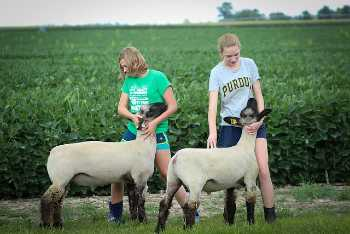

Fish Haven, Idaho
Weather Summary
Currently:°F,
High: °F
Wind Chill:
Humidity: %
Wind Speed: mph
5 day forcast
°F |
°F |
°F |
°F |
°F |
Something really interesting
The Bear Lake Junior Livestock Committee and 4-H Personnel met Thursday evening to
make plans to move forward with a reduced version of the fair.
The County Commissioners realize the kids have put in countless hours raising and working with their
animals to be ready for the fair and feel we can safely have all the 4-H and FFA activities. The fair is
a culminating event that marks the end of countless hours of hard work, effort, and learning. 4-H and
FFA livestock projects effectively help youth develop critical life skills such as accepting
responsibility, getting along with others, setting goals, decision making, and interpersonal skills.
The activities will be held August 11-15. The 4-H Horse Show will kick off the events and will be held
Tuesday morning. On Thursday morning, the youth will exhibit their swine and lamb projects followed by
poultry and rabbit shows in the afternoon. The evening will finish with the 4-H Style Review. The beef
show will be held Friday morning, followed by the dairy show. After lunch the “best of the best” will
compete in the Round Robin, crowning the overall livestock showman.
The youth will be judged on their showmanship ability and the quality of their animals. The 3rd Annual
Cupcake Wars with the theme “Disney” will take place Friday following the Round Robin. The evening will
round out with the 4-H Dog Show. Saturday will be the traditional Junior Livestock Sale and Buyers
Brunch. It has been reported that this would be a virtual sale this year. That is not the case. It will
be a live auction as usual.
We are making plans to accommodate those who would like to participate in the sale without being in
attendance. Please contact the Extension office for details.
We are happy to say that all the kid’s projects; sewing, crafts, arts, science, cooking, shooting
sports, and school projects will be displayed.
Plans are in place to follow Stay Healthy Guidelines and local recommendations. All events are open to
the public. The youth have spent a large amount of time on these projects and would greatly appreciate
your support August 11-15, 2020. Look for a more detailed schedule in the near future.
Bear Lake County Extension Office, Jul 1, 2020
Contact Us
27 N. State Street
Preston, Idaho 83262
☎ 208.598.6874
✉ contact@weatherwonder.com